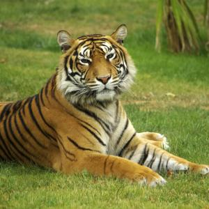
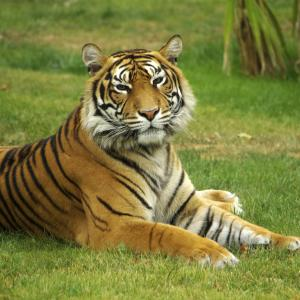
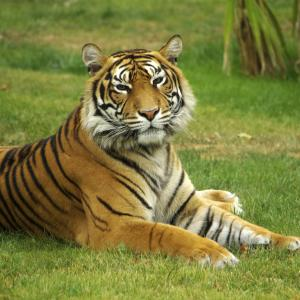
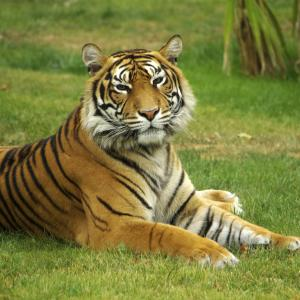

 

Le chien est la sous-espèce domestique de Canis lupus, un mammifère de la famille des Canidés, laquelle comprend également le loup gris et le dingo, chien domestique redevenu sauvage.
Le tigre est une espèce de mammifère carnivore de la famille des félidés du genre Panthera. Aisément reconnaissable à sa fourrure rousse rayée de noir, il est le plus grand félin sauvage et l'un des plus grands carnivores terrestres.
Les singes sont des mammifères de l'ordre des primates, généralement arboricoles, à la face souvent glabre et caractérisés par un encéphale développé et de longs membres terminés par des doigts.
Sus scrofa domesticus est une sous-espèce du sanglier sauvage. C'est un mammifère domestique omnivore de la famille des porcins, ou suidés.
Zèbre est un nom vernaculaire, ambigu en français, pouvant désigner plusieurs espèces différentes d'herbivores de la famille des équidés, et du genre Equus, vivant en Afrique. Ils se trouvent principalement en Afrique centrale et australe.
Pingouin est un nom vernaculaire porté en français par deux espèces d’oiseaux de la famille des Alcidés, dont la seule espèce encore vivante est le Petit Pingouin.